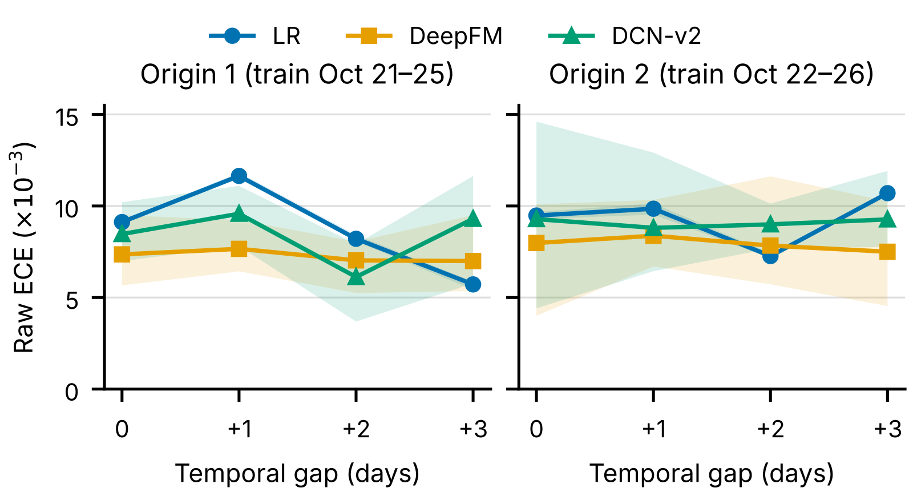
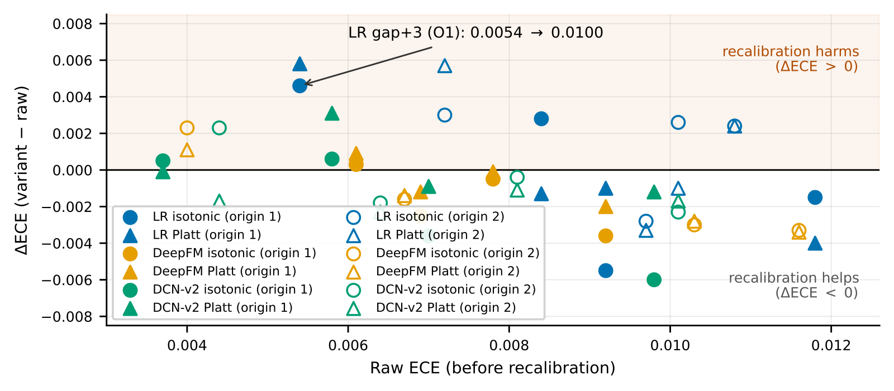
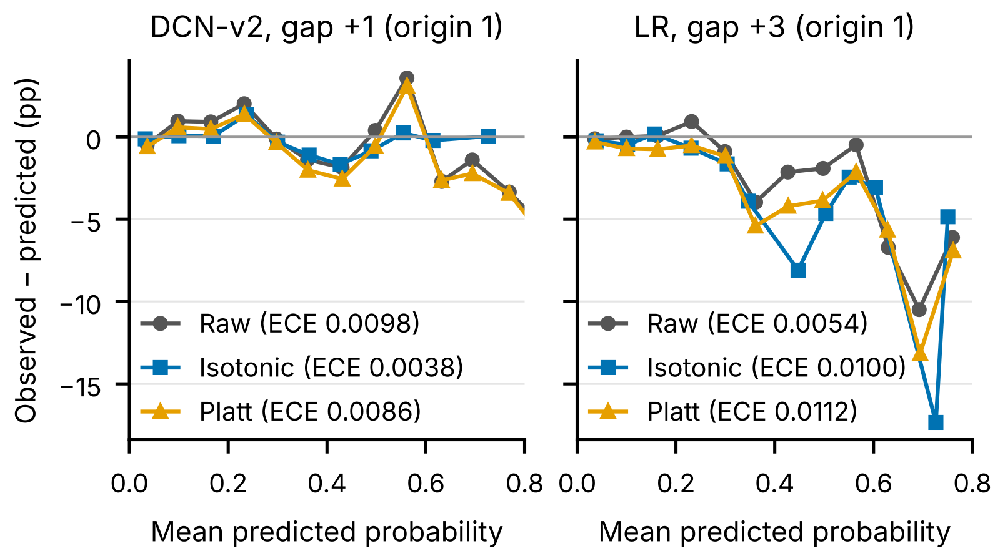

目录 · 10 节
1它到底在测什么？2实验怎么设计3发现一：随机划分会把校准说得太好4发现二：校准误差并不随时间单调变差5发现三：6 小时窗口的校准，三次里有一次在帮倒忙6发现四：关键是时间跨度，不是样本量7发现五：在模拟拍卖里，利润几乎不受影响8我认为它的局限9一个推荐或广告团队可以怎么试10一句话结论广告系统里，用最近几小时的新数据给 CTR 模型做一次校准，通常被当成只赚不赔的例行步骤。这篇论文在 Avazu 十天的广告日志上逐天检验后发现，用前 6 小时数据拟合的校准器，约三分之一的时候反而让校准误差变大，最坏的一次翻了一倍。把拟合窗口拉长到前 12 小时，这种伤害基本消失；而且只从这 12 小时里均匀抽 5% 的样本，就能拿回完整窗口 88% 的校准改善。在这组对照里，光看样本条数解释不了校准的改善，时间跨度更关键；不过跨度同时改变了覆盖的时段、抽到的小时数和数据的新旧，作者没有把这几样分开。
做出价、预算控制或任何直接消费 pCTR 数值的团队值得读这篇，因为它指出了一个很少被检查的失败方式：校准任务每天照常跑，却在悄悄把预估值改坏，而且事后很难察觉。不过它是单作者的测量研究，只用了 2014 年的 Avazu 一个数据集，两个训练起点的测试日大部分重叠；“12 小时最好”这个具体数字不能直接搬到别的日志上，值得带走的是测量方法：按天、按多个训练起点、按多个随机种子去数校准到底帮了几次、害了几次。
它到底在测什么？
CTR 模型的输出在广告系统里不只是用来排序。按期望价值出价时，pCTR 要乘以每次点击的价值；预算控制要把预估点击率和实际点击率对比，决定放量还是收紧。一个 AUC 很好、但整体高估 10% 的模型，会让每次出价都偏高。所以线上通常在模型后面再加一层校准：拿最新一段有标签的数据，拟合一个单调映射，把原始分数修正成更接近真实点击率的数值。
论文测了两种最常用的校准器。Platt scaling 和 isotonic regression。校准好坏看 ECE，分 15 档计算。
用一个具体场景说明伤害是怎么发生的（数字取自论文表 I 中 LR 模型的一个格子）：
| 时间 | 模型的平均偏差（预估减实际） | 校准器的动作 |
|---|---|---|
| 前一天 18 点到 24 点（拟合窗口） | -0.0071，低估 | 学到“要把预估整体往上调” |
| 第二天全天（被校准的目标日） | +0.0031，本来就高估 | 被再往上调，ECE 从 0.0054 涨到 0.0112 |
拟合窗口和目标日的偏差方向相反，校准器忠实地学到了窗口里的规律，用到第二天就帮了倒忙。
实验怎么设计
| 设置 | 内容 |
|---|---|
| 数据 | Avazu，约 4043 万次曝光，2014 年 10 月 21 日到 30 日，整体点击率 16.98% |
| 模型 | LR、DeepFM、DCN-v2，每个训练集上限 400 万条 |
| 训练起点 | 起点 1 用第 0 到 4 天训练，测第 5 到 8 天；起点 2 整体后移一天 |
| 对照 | 同一数据的随机划分 |
| 校准 | 每个测试段用它之前紧邻的一段数据拟合 Platt 和 isotonic：离训练最近的那个测试日（gap 0）用当天前 6 小时拟合、只评测当天剩下的时段，其余测试日用前一天最后 6 小时；校准器从不看被评测的数据及其之后的数据；主实验用 6 小时，另扫 1、3、6、12、24 小时 |
| 下游 | 模拟二价拍卖，按 pCTR 出价，比较利润 |
| 重复 | 三个随机种子 |
主实验共有 2 个起点 × 4 个测试日 × 3 个模型 × 2 种校准器 = 48 次校准应用。
发现一：随机划分会把校准说得太好
随机划分的测试集和训练集来自同一批日子，模型等于在“见过的时间”上考试。在起点 1 最近的测试日上，随机划分的 AUC 比按时间划分高约 0.014；ECE 的差距更大，LR 在随机划分下的 ECE 只有按时间划分的 55% 到 62%，三个种子都如此。也就是说，如果上线前只按随机划分检查“ECE 是否低于某个阈值”，测到的根本不是上线后会遇到的那个量。
不过这个差距并不稳定。换到起点 2，最近测试日上的 AUC 差距几乎消失，两个深度模型的 ECE 比值也随种子大幅摆动，只有 LR 稳定。作者因此只把结论落在 LR 上，这是一种克制的写法。
发现二：校准误差并不随时间单调变差
一个常见的直觉是：测试日离训练窗口越远，分布漂移越大，ECE 越高。论文的数据不支持这一点。

LR 在起点 1 上第二个测试日最差、之后反而变好；在起点 2 上第三天最好、第四天最差。同一个日历日在两个起点下的 ECE 也不同：10 月 28 日的 LR ECE 从 0.0082 变成 0.0099。把训练窗口挪一天，对某一天校准的影响和换一天测试差不多大。这意味着“模型老了就更不准”不能作为安排重训和校准频率的唯一依据。
发现三：6 小时窗口的校准，三次里有一次在帮倒忙
48 次应用里，三个种子分别有 16、14、17 次让 ECE 变大，所以“约三分之一”不是某个种子的偶然。原始模型偏得厉害时，校准常常很有效，最好的一次把 ECE 降了 61%；但原始 ECE 很高也不代表校准一定有用，下图里高 ECE 区域同样有变差的点。

为什么会这样？作者认为样本不够不太可能是唯一原因：6 小时窗口有 62 万到 101 万条曝光，Platt 只有两个参数，估计得几乎没有误差，照样能把 ECE 翻倍。不过作者也说，稀疏分数区间里的估计误差没有被排除。更合理的解释是方向不一致：拟合窗口是前一天晚上的 6 小时，目标是新的一整天，时段构成、流量结构和点击率都不同。作者用两条事后规则验证了这一点：“窗口和目标日的偏差符号相反就会伤害”在 48 次里判对 83%；“如果把窗口的偏差从目标日上扣掉、剩下的绝对偏差反而更大，就会伤害”判对 88%，而“永远不伤害”这条基线只有 67%。两条规则都要用到目标日自己的偏差，上线前拿不到，但它们说明了真正需要提前预测的是什么。

作者还试了一个看起来最自然的上线前开关：拟合窗口上的 ECE 高于阈值才校准。在起点 1 上调好阈值，冻结后用到起点 2，平均 ECE 是 0.0082，和“总是用 isotonic”的 0.0081、“从不校准”的 0.0083 几乎一样。原因是窗口上的 ECE 和目标日的 ECE 相关性只有约 0.39。更麻烦的是，哪种校准器更好也会换：起点 1 上 isotonic 更好，起点 2 上 Platt 更好。
发现四：关键是时间跨度，不是样本量
把拟合窗口从 1 小时扫到 24 小时，只看测试集固定的三个测试日（共 36 次应用）：
| 窗口长度 | 1 小时 | 3 小时 | 6 小时 | 12 小时 | 24 小时 |
|---|---|---|---|---|---|
| 伤害次数（三个种子） | 15 / 15 / 18 | 16 / 16 / 20 | 13 / 14 / 17 | 4 / 5 / 3 | 9 / 11 / 11 |
| 窗口中位数曝光量 | 9 万 | 28 万 | 74 万 | 186 万 | 383 万 |
从 1 小时到 6 小时几乎没有改善，到 12 小时突然变好，24 小时又变差。这不是平滑的“数据越多越好”。
为了分清是样本量还是时间跨度在起作用，作者做了一个对照：从 12 小时窗口里均匀抽样，抽到和 1 小时窗口一样多（中位数约 9.3 万条，约为 12 小时窗口的 5%）。这里的“收益”指 ECE 的改善：完整 12 小时窗口比 1 小时窗口多降了一截 ECE，稀疏样本拿回了这一截的 88%，伤害次数也和完整窗口相当，而拟合速度快 20 到 25 倍。
一个可能的解释是：一天里不同时段的点击率在变，决定校准准不准的“有效样本数”是覆盖了多少个不同的小时，而不是多少条曝光。24 小时窗口为什么反而变差，作者没能分清：多出来的凌晨和上午时段，单独拿来拟合时恰好都是净伤害的，但时段和数据新旧在这个设计里是同一个变量。
发现五：在模拟拍卖里，利润几乎不受影响
在模拟的二价拍卖里，所有校准带来的利润变化都在 -0.21% 到 +0.26% 之间，方向和 ECE 的变化基本一致（相关系数约 -0.69）。这符合理论预期：二价拍卖里，出价误差对利润的影响是二阶的，ECE 在 0.01 这个量级的变化本来就不会大幅改变利润。即使是用测试日自己的标签拟合的 isotonic，一个现实中拿不到的上限，也只是在全部 24 组设置里小幅胜过原始模型。作为对照，直接知道真实标签的出价能赚到原始模型的 1.75 到 1.97 倍，说明利润的空间在排序能力上，不在校准上。
我认为它的局限
第一，只有一个数据集，而且很旧。Avazu 是 2014 年十天的移动广告流量，两个训练起点有三个测试日完全重叠，不是独立的复现。“12 小时窗口最好”只是这份数据上的结果，作者自己也说需要别的日志验证。
第二，深度模型的结论受种子噪声影响很大。DeepFM 和 DCN-v2 的原始 ECE 在种子间的标准差最高到 0.0051，和许多格子里的效果本身一样大；这里一个“格子”指一个训练起点下的一种组合：模型（3 个）× 测试日与训练截止的间隔（4 档）× 校准方法（Platt 或 isotonic），每个起点共 24 个，每个格子的效果是校准前后 ECE 的变化量。作者用三个随机种子各跑一遍，只要种子 42 的变化方向在别的种子里翻转，或者变化量不到种子间标准差的两倍，就把这个格子算作“在噪声范围内”。按这个标准，第一个起点 24 个格子里有 11 个、第二个起点有 14 个在噪声范围内，而且全是 DeepFM 和 DCN-v2 的格子。论文的主要结论实际上建立在 LR 上，而线上 CTR 模型很少是 LR。
第三，下游只测了一个简化的拍卖。市场价格是固定参数的对数正态分布，没有预算控制、底价和 pacing，而这些恰恰是对 pCTR 绝对值最敏感的环节。±0.2% 的利润变化不能说明校准在真实系统里无关紧要。
一个推荐或广告团队可以怎么试
- 先离线回放现有的校准任务：按天统计校准前后的 ECE 和 LogLoss，数一数过去一个月里校准让哪几天变差了。如果从来没数过，这一步本身就可能发现问题。
- 每天记录拟合窗口和目标日的平均偏差及其符号。符号相反的日子如果和“校准变差”的日子高度重合，说明问题出在窗口和目标日不匹配。
- 把窗口长度当成参数扫一遍，至少比较 6、12、24 小时；同时试“在长窗口里稀疏抽样”，它可能用很小的成本拿到长窗口的大部分收益。
- 任何“窗口 ECE 高于阈值才校准”的开关，都要在不同的训练起点或不同的周上做前瞻验证，不能用调阈值的那段数据评估。
一句话结论
例行校准并不是无害的保险，它在三分之一的时候会把预估改坏；先按天把帮了几次、害了几次数清楚，再决定窗口多长、开关怎么设。
| 维度 | 评价 |
|---|---|
| 问题重要性 | 高。凡是直接使用 pCTR 数值的系统都有校准任务，它的失败方式很少被检查 |
| 方法创新性 | 低到中。没有新方法，贡献在测量设计：逐天、多起点、多种子，以及样本量与时间跨度的对照 |
| 实验证据 | 中。LR 上的结论在三个种子间稳定；只有一个十天的旧数据集，两个起点大量重叠 |
| 工程成本 | 低。12 小时窗口的一次拟合只要 1 到 2 秒，稀疏抽样更快 |
| 是否值得尝试 | 值得。回放现有校准任务、统计伤害次数、扫窗口长度，成本很低 |
读完这篇，你觉得
夜读鸮记下了，谢谢你的反馈。
点一下即可，无需登录；再点一次撤回。只统计匿名次数，不记录你是谁。
讨论
欢迎补充实验细节、复现经验或不同看法。需 GitHub 登录。
正在加载讨论…